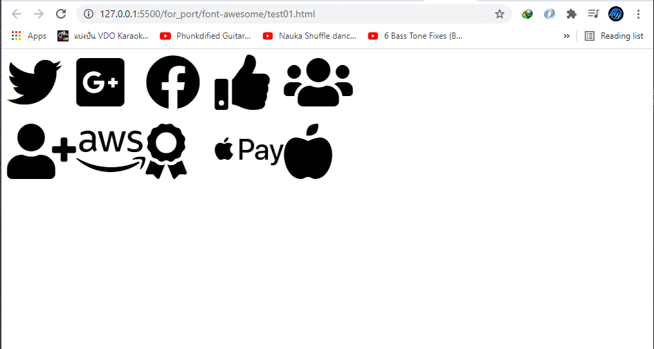

Font-awesome เป็นบริการเกี่ยวกับ Icon ที่เห็นได้ทั่วไปตาม web site ต่างๆ ถ้าเราต้องการใช้ใน project ของเราขั้นตอนแรกต้องทำการวมัคร account จาก https://fontawesome.com/ ก่อนเมื่อสมัครแล้วสามารถกด download หรือ จะใช้เป็นบริการ cdn ก็ได้ซึ่งในตัวอย่างนี้เราจะใช้ cdn โดยไปที่ https://fontawesome.com/account/cdn จะได้ page ตามรูปด้านล่างและทำการ copy link cdn มาไว้ใน project


หลักจากนั้นเราจะทำการทดสอบโดย ทำการค้นหา icon ภายใน web site font awesome จากนั้น copy ไว้ใน project ดังโค้ดด้านล่างและผลลัพธิ์ที่ได้แสดงว่าใช้งานได้
